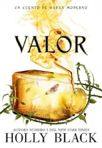
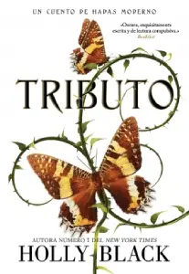
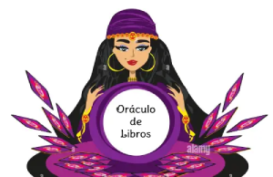

RESEÑAS MAS RECIENTES
Los lobos esperan
Además de una prosa sencilla (quizá demasiado) y un ritmo que hará que leas la novela de una sola sentada, la mayor virtud de Los lobos esperan es que introduce al lector juvenil en una problemática con muchas aristas y donde por supuesto que hay culpables, pero el foco está en esos hombres que callan, que ríen, que no dicen nada, que aceptan, que son cómplices silenciosos. Y en las mujeres que se dan la mano y alzan su voz.
Valor

Aunque Valor no es la historia más destacada de Holly Black, saciará a quienes buscan con desesperación más dosis del mundo de los feéricos. El estilo de la autora, las maravillosas citas al principio de cada capítulo y una ambientación que atrapa al lector en contra de su voluntad han convertido estos «cuentos de hadas modernos» en algo parecido al Nuncamás: la droga que hace olvidar a los personajes de esta historia que en el mundo real no existe la magia.
Tributo

Aunque no es una historia tan compleja como la de la trilogía de Los habitantes del aire, Tributo captura perfectamente la esencia de Holly Black. Con pocas palabras, nos transporta a un mundo crudo, sangriento y lleno de criaturas dispuestas a aprovecharse de cualquier debilidad para destrozarte. Black aúna de una forma discordante y absorbente los aspectos más mundanos y sórdidos de nuestra realidad con la fantasía de un reino de las hadas que se alimenta del miedo de los humanos.
RESEÑAS REALIZADAS
- Territorio Lolita
- Persona Normal
- Ready Player One
- The Cruel Prince
- Cazadora de Hadas
- Cinder&Ella
- Renegados
- El secreto de Shaitan
- La chica del tren
- La ultima estrella
- Wolfsong
- The Baller
SOBRE NOSOTRAS

Somos dos hermanas que en 2021, luego de casi un año de pandemia, frente a la necesidad de ayudar a nuestros padres economicamente,de a poco y con mucho esfuerzo creamos Oráculo de libros. Creemos que leer enriquece el alma, y por eso buscamos traerte los mejores libros al menor precio posible. Y si no sabes que leer, ¡no te preocupes! tenemos una seccion de reseñas donde vas a poder ver nuestras opiniones sobre los libros que vendemos.
Gracias por confiar en nosotras y no te olvides: ¡Algo muy mágico puede suceder cuando se lee un buen libro!
RESEÑAS MAS ANTIGUAS
Wolfsong
Lo que mas me gusto es el significado de familia que el autor maneja, la relación de Ox con su mamá Maggie es muy bonita, ambos pasaron por mucho a causa de su padre, pero que desde que los deja, ellos juntos son inseparables, enserio que lo recuerdo y me llena de un amor profundo. y también la familia Bennet cuando llegan arropan completamente a Ox y a su mamá y los incluyen de una manera única y hermosa. Y también manejan la amistad de una manera muy bonita, como la relación de Ox y los chicos del taller donde trabaja y con Gordo, la lealtad los unos con los otros es única y muy divertida, y les juro que yo los amo mucho, que mi corazón nunca se va a poder recuperar de esta lectura.
Alguien esta mintiendo
Me gusto muchisimo muchas cosas que si bien son crueles, son ciertas que aquí Karen cuenta, como lo son los falsos amigos, las relaciones destructivas, la presión del futuro, la presión de tus padres y o problemas familiares, de tratar de encajar, de lidiar con la escuela, con las expectativas que la gente tiene en ti, son muchas cosas que se mencionan, que son ciertas que jóvenes están actualmente viviendo, me gusto mucho como Karen toca estos temas, con realismo y no son nada forzados.
Persona Normal
Persona normal es un libro que le tome mucho cariño, me dejo con un sentimiento de felicidad, de amor, de respeto, me encanto que pensar en el, se me pone la piel de gallina y los ojos se me ponen vidriosos de las lagrimas de felicidad.
Benito Taibo tiene una manera de escribir muy bonita, que te va llevando a ser parte de la vida de estos personajes, y a amar mas a los libros, a tomarle un cariño especial a la vida misma, a hacer de la vida algo extraordinario y sobre todo a no ser una persona normal.